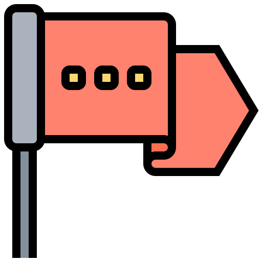

Surviving Apes
A remarkably overoptimistic guide to survive extreme circumstances

Risk Evaluation
Going to the beach is always fun, isn’t it? And yet such pleasurable environment can easily put your life at risk. I bet you are thinking about shark attacks, or poisonous jellyfish. Truth is, you shouldn’t be worried about any of these really. Sure, a shark can be pretty deadly, but what’s the likelihood of encountering one? Instead, a jellyfish is more common but hardly lethal. Let’s try to be more rational. What about skin cancer? How many times did you get sunburnt while enjoying a swim or a napping on the sand? Melanomas are significantly more probable and fatal than you think. And yet, most people wouldn’t even consider them as incumbent “dangers”. The interesting question here is: Why? Our cognitive processes are influenced by two forces: rationality (logic, pragmatism) and instinct (intuitions, fear and other emotions dictated by past experiences). Every time we evaluate risk, rational thoughts will be filtered by unconscious impulses. Before taking any decision, the critical assessment of your risk perception should always take in consideration the "Terror" (or the “Optimism”), as measurements of the impact that instincts and emotions will have on your analysis. Pay attention to this, or you'll end up dying of skin cancer while looking out for sharks.
 Increasing survival likelihood
Increasing survival likelihood

Control your reaction
Panicking paralyzes you and prevents decisive actions. It’s like in the movies. The guy that freaks out is the first who dies.
You don’t want to be that character. It appears to be true: some people are naturally gifted when it comes to handling emergencies.
That said, practice makes perfect.
The goal is to be trained enough to consciously and deliberately choose
our response to disasters.
Keep in mind the following points:

Prioritize
Ok, now you’ve managed to calm down. You are luckily still breathing, conscious about your surroundings.
What do you do now?Yes, you need a shelter. Yes, you’ll soon need water and food, and for
that you’ll need a fire. And what about a rescue signal? In reality, the prioritization of such necessities
varies drastically depending on the environmental conditions around you. Are you in the middle of
the desert or on top of a glacier?
Having said that, experts usually recommend proceeding in the following order:

Elaborate the experience
After the cessation of the crisis and your successful survival, when all the suffering and danger will have passed,
dissociation will probably arise. You will have lived a traumatic experience likely to negatively affect
your psychological health for the rest of your life.
If you need help to elaborate the experience, seek help. Narration can represent an effective
tool both for your recovery and for the education and empowering of others.
Last but not least...
 Inform others of your plans!
Any time you are planning – for any reason – to travel to remote areas make sure that at least two or three people know about your precise intentions. Remember to clearly explain the nature of your activity, your route, the schedule of your journey and the means of communication you’ll be using. If you want to be extra-safe, similarly inform local authorities.


Powered by J. G.